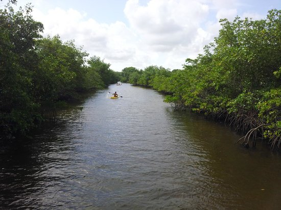

Conheça o Rio Catu
O Rio Catu é um rio brasileiro que banha o litoral leste do Estado do Rio Grande do Norte. O Catu nasce nos taboleiros da Mata do Marfim, município de Canguaretama, e após cruzar a BR-101 passa pelos municípios de Goianinha, Vila Flor e Tibau do Sul, num percurso de aproximadamente trinta quilômetros, desaguando finalmente na praia de Sibaúma (Tibau do Sul). Ainda hoje na sua foz costumam eventualmente aparecer peixes-boi-marinhos.
No passado, suas margens eram cobertas de Mata Atlântica, que foi durante séculos substituída por canaviais ou pela agricultura de subsistência. Próximo à margem direita do rio, no município de Canguaretama, à altura do quilômetro 158 da BR-101, localiza-se a gruta "do Bode", ou "dos Sete Buracos", formada por uma rede de subterrâneos e respiradouros.
